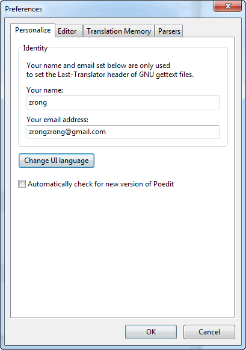
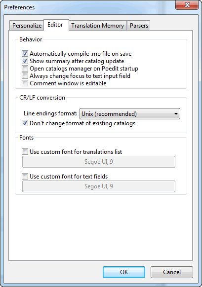
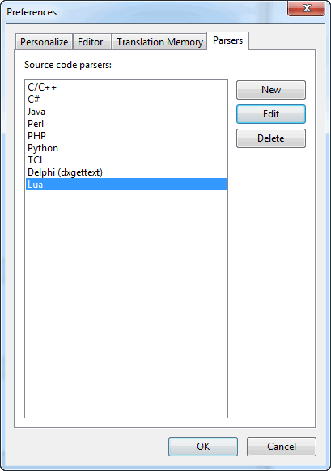
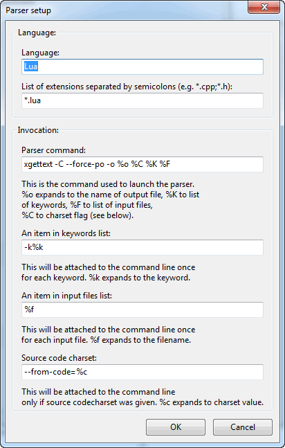
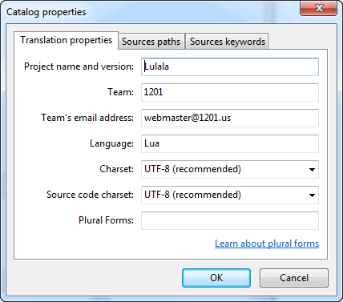
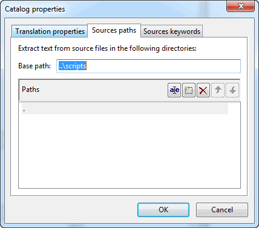
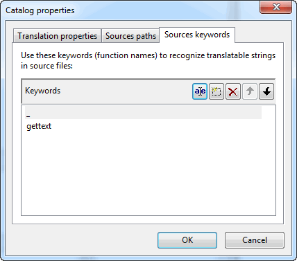
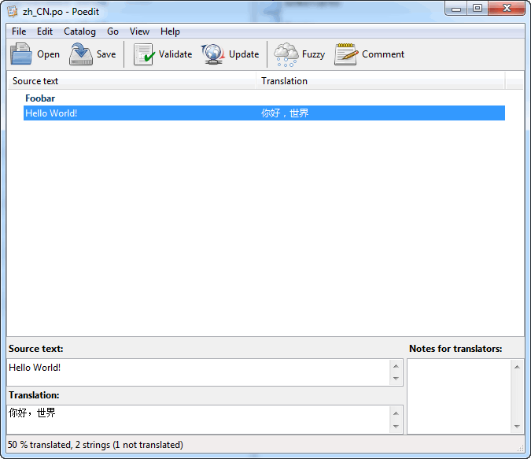
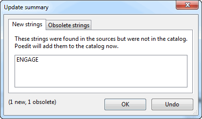
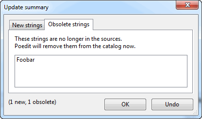

[转]在Lua中使用gettext实现多语言支持
本文系转载，原文链接：http://zengrong.net/post/1986.htm
感谢原作者无私分享。
2016-06-07更新：加入gettext包含的工具简介。
GNU gettext 是一套优秀的国际化工具。在 linux 中被大量采用。wordpress 也使用 gettext 实现多语言支持。
本文介绍如何在 quick-cocos2d-x 中使用 gettext 做多语言支持。同时介绍多语言翻译工具 poedit 对 Lua 语言的支持。
gettext 简介
gettext 是一套工具集的名称。这套工具集包含 xgettext/msginit/msgfmt 等一套建立模版(POT)、创建PO文件和编译MO文件的工具。
gettext 包含的工具如下：
- xgettext 从源码中生成POT模版或直接生成PO文件；
- msginit 基于POT文件生成待翻译的PO文件；
- msgfmt 将PO文件编译成二进制的MO文件；
- msgunfmt 顾名思义，将MO文件反编译成PO文件；
- msgmerge 将POT模版文件与PO文件合并。用于在源码更新之后将新的待翻译内容更新到已经翻译的PO文件中；
- msgcat 将多个PO文件合并在一起。
使用 gettext 需要涉及这样几个概念：
- 源码
程序的源代码，本文中是 lua 文件； - POT 文件
从源码中扫描得到的翻译模版文件，原始语言取决于源码字符串中使用的自然语言，建议使用英文。纯文本格式； - PO 文件
根据 POT 文件建立的各种语言版本的待翻译文件，其中包含原始语言和被翻译的目标语言。纯文本格式； - MO 文件
供最终软件实际使用的文件，使用 PO 编译而成。二进制格式。
一般的工作流程是这样的：
- 在源码中使用约定的语法来书写字符串，C语言默认是
gettext("my text")。在本文中，将使用_("my text")； - 使用 xgettext 从源码中扫描出需要翻译的文本，建立 POT 文件；
- 使用 msginit 命令根据 POT 文件建立 PO 文件。或者直接在上一步也可以直接建立 PO 文件；
- 进行人工翻译（当然也可以进行机器翻译），翻译的结果保存在 PO 文件中；
- 使用 msgfmt 命令将 PO 文件编译成 MO 文件；
- 在程序中实现调用命令，本文中是
_函数，这个函数将读取并解析 MO 文件，根据调用的原始语言文本返回翻译之后的文本。
Poedit 简介
gettext 提供的工具集都是基于命令行的，有些程序员并不习惯命令行。它也没有提供用于翻译工作者的对照翻译工具。
而 Poedit 则提供了一切。
Poedit 可以从源码中提取文本生成 PO 文件，也提供了一个GUI界面用于对照翻译。它还可以直接生成最终的 MO 文件。
当然，在GUI之后，它依然是使用 gettext 来处理的，但这些具体的细节被隐藏了。
使用 Poedit 生成和翻译 PO 文件
软件设置
1.开启 Poedit，执行 File - Preferences 命令，填入自己的个人信息。

2.切换到 Editor tab，选中 Automatically compile .mo file on save 和 Show summary after catalog update 两项。

3.切换到 Parsers tab，这里提供了几种源码解析器，但默认没有Lua。我们下面将加入Lua源码解析。

4.点击 New 新建一个源码解析器，进行如下图的设置。

这些设置基本上与 C/C++ 的设置一致，只是修改了扩展名支持以及 Parser command 栏位。在 xgettext 命令的参数中，-C 就是 –language=C 的简写。
接下来将新建一个项目进行设置。
项目设置
1.执行 File - New catelog… 命令，在 Translation properties tab 中加入自己的信息。这里的 Language 选项只是个显示选项而已，并不能决定你使用的是何种语言，也不和刚才的软件设置中的 Parsers 相关。

2.设定源代码路径，这个非常重要。
我采用 quick 默认的目录风格，所有的源码放在 scripts 中。同时我建立了一个新的 i18n 目录，这个目录与 scripts 目录同级。生成的 PO 文件将保存在这个目录中。
那么对于当前正在编辑的 PO 文件来说， Base path 就应该设置成 ..\scripts ， 下面的 Paths 就应该加入 . 这个路径。注意在 Windows 下， Base path 的路径分隔符必须采用 Windows 的格式（反斜杠 \ ），而不应该使用 / 。

3.设定源代码关键词
前面我们已经确定了自己的关键词，那就是 _ 。当然我们也可以使用 C 语言的默认关键词 gettext ，但那样未免长了一点。

4.设定完毕后，将项目保存为 i18n/zh_CN.po ，请注意我上面强调过的第2步。
解析源码
一切设定成功之后，直接按下主界面上的 Update 按钮即可解析源码。Poedit 会将源码中解析到的使用 _("my text") 格式的关键词，将其中的字符串提取处理显示在主界面中。
我们可以在主界面中对关键词进行翻译。

如果源码有更新，再次单击 Update 按钮重新解析源码。这是如果解析到新的字符串，或者有字符串不再使用，Poedit都会进行提示。


需要注意的一点是，在 Lua 的注释中不要包含半角的单引号。
这是由于 Lua 的注释使用 – 符号，而 C 语言使用 // ，所以 gettext 会认为 Lua 中的注释是代码的一部分而不会忽略解析。在一般情况没有什么问题，但如果在注释中包含了半角的单引号（这是在 C 语言中代表字面值），gettext 就会认为语法错误因此产生解析错误。
生成 MO 文件
在软件设置中，我们设置了在保存项目的时候自动生成 MO 文件，所以这点不用操心了。生成的 MO 文件与 PO 文件在相同的目录。
在 Lua 中解析 MO 文件
MO 是个二进制格式的文件，我们的程序在读取它的时候，需要分析 它的结构 ，将它解析成 原始文本 - 翻译文本 的键值对形式，供我们使用。
许多语言中已经包含了 MO 文件的解析库，但是 Lua 没有。所以我们需要自己写一个。
不过 J.J?rgen von Bargen 已经完成了这件事，我将他的代码进行了简单封装，将其放在我的 lua 库中了，名称是 utils.Gettext。
由于要支持跨平台的原因，读取 MO 文件采用的是 CCFileUtils ，如果要在其他环境中使用，可以改用 io 库。我在 Gettext._getFileData 中保留了使用 io 库的代码，只是将其注释了。
综合范例
使用这种方法，MO 文件会被解析成功一个 table 返回：
|
|
更通用的方法是这样：
|
|
在我的游戏中，则是这样使用的：
|
|